Cavalry candidate review Offline candidate. Approximately 90% reference resemblance after Lanczos reduction is a visual target, not a measured score. Native facing mapping, physical pivots, visual approval and runtime acceptance remain open. References follow the current legacy/python/gfx rearrangement.
All families | Contract and validation
Portrait reference and Lanczos exports Tactical reference and saved sprites 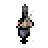
Tiny repository identity reference unit export recipe and pins
planes/cavalry/n-base-2x.png 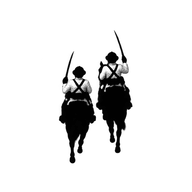
planes/cavalry/n-mask-2x.png 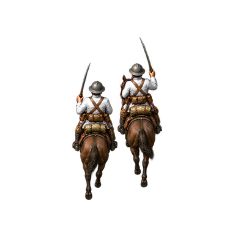
planes/cavalry/n-base-4x.png planes/cavalry/n-mask-4x.png 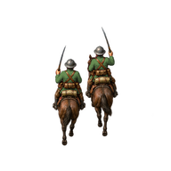
sprites/cavalry/cp/n-normal-2x.png 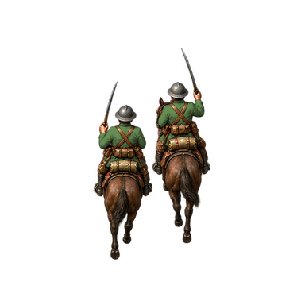
sprites/cavalry/cp/n-normal-4x.png 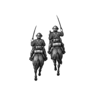
sprites/cavalry/cp/n-spent-2x.png 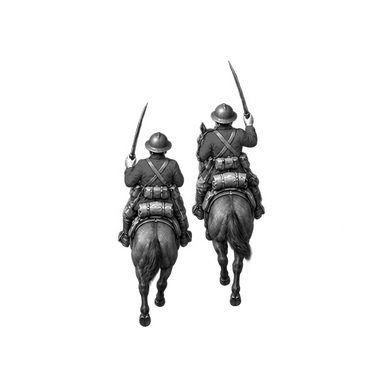
sprites/cavalry/cp/n-spent-4x.png 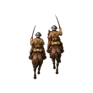
sprites/cavalry/ec/n-normal-2x.png sprites/cavalry/ec/n-normal-4x.png sprites/cavalry/ec/n-spent-2x.png 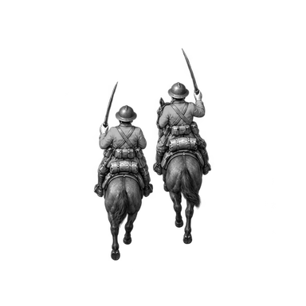
sprites/cavalry/ec/n-spent-4x.png 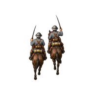
sprites/cavalry/neutral/n-normal-2x.png 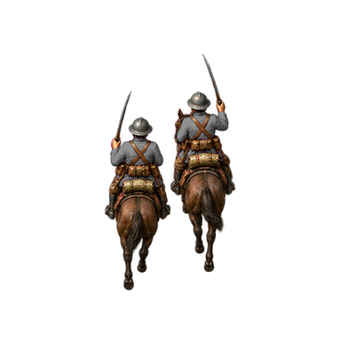
sprites/cavalry/neutral/n-normal-4x.png 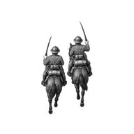
sprites/cavalry/neutral/n-spent-2x.png sprites/cavalry/neutral/n-spent-4x.png planes/cavalry/nw-base-2x.png planes/cavalry/nw-mask-2x.png 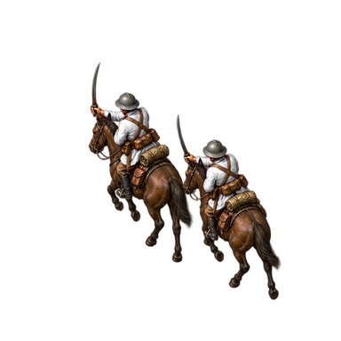
planes/cavalry/nw-base-4x.png 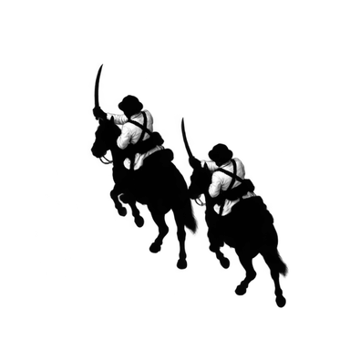
planes/cavalry/nw-mask-4x.png 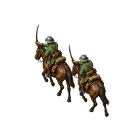
sprites/cavalry/cp/nw-normal-2x.png 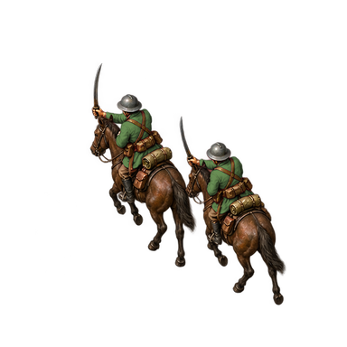
sprites/cavalry/cp/nw-normal-4x.png 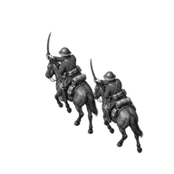
sprites/cavalry/cp/nw-spent-2x.png 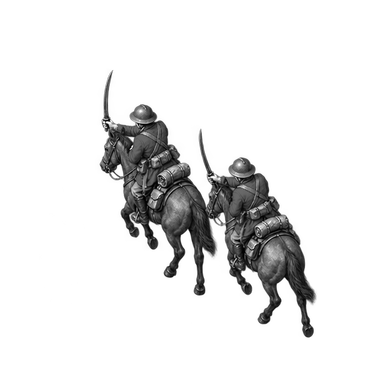
sprites/cavalry/cp/nw-spent-4x.png 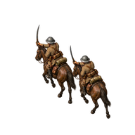
sprites/cavalry/ec/nw-normal-2x.png 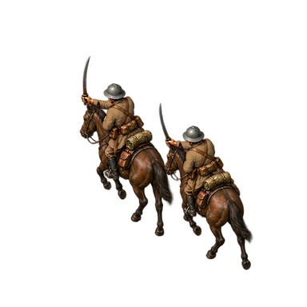
sprites/cavalry/ec/nw-normal-4x.png 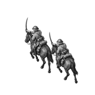
sprites/cavalry/ec/nw-spent-2x.png 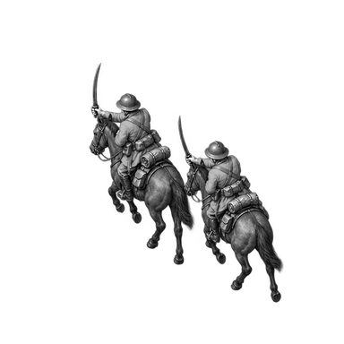
sprites/cavalry/ec/nw-spent-4x.png 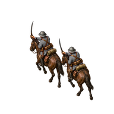
sprites/cavalry/neutral/nw-normal-2x.png 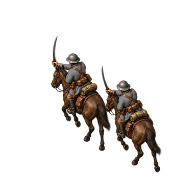
sprites/cavalry/neutral/nw-normal-4x.png 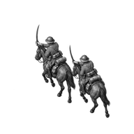
sprites/cavalry/neutral/nw-spent-2x.png 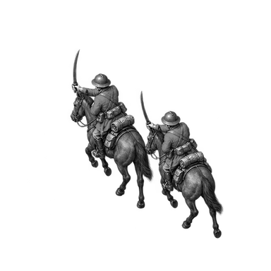
sprites/cavalry/neutral/nw-spent-4x.png 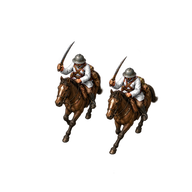
planes/cavalry/sw-base-2x.png planes/cavalry/sw-mask-2x.png 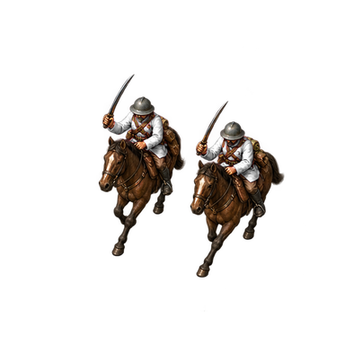
planes/cavalry/sw-base-4x.png planes/cavalry/sw-mask-4x.png 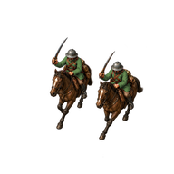
sprites/cavalry/cp/sw-normal-2x.png sprites/cavalry/cp/sw-normal-4x.png sprites/cavalry/cp/sw-spent-2x.png 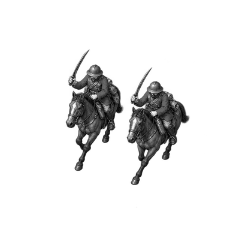
sprites/cavalry/cp/sw-spent-4x.png sprites/cavalry/ec/sw-normal-2x.png 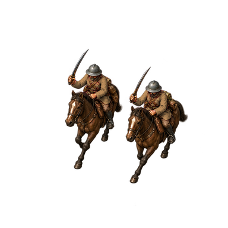
sprites/cavalry/ec/sw-normal-4x.png 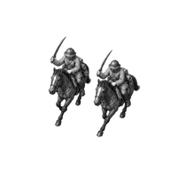
sprites/cavalry/ec/sw-spent-2x.png 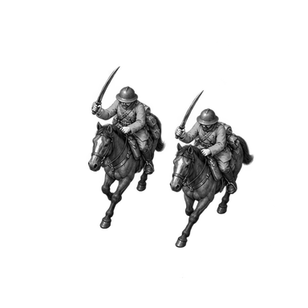
sprites/cavalry/ec/sw-spent-4x.png sprites/cavalry/neutral/sw-normal-2x.png sprites/cavalry/neutral/sw-normal-4x.png sprites/cavalry/neutral/sw-spent-2x.png sprites/cavalry/neutral/sw-spent-4x.png 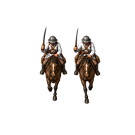
planes/cavalry/s-base-2x.png 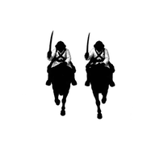
planes/cavalry/s-mask-2x.png 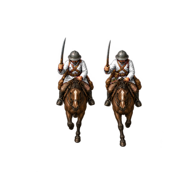
planes/cavalry/s-base-4x.png 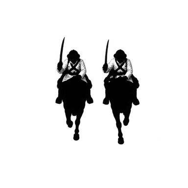
planes/cavalry/s-mask-4x.png 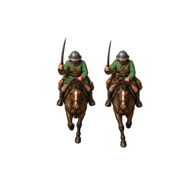
sprites/cavalry/cp/s-normal-2x.png 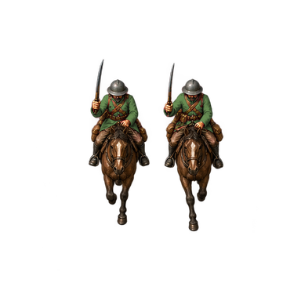
sprites/cavalry/cp/s-normal-4x.png 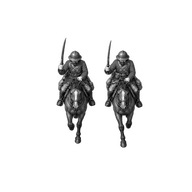
sprites/cavalry/cp/s-spent-2x.png 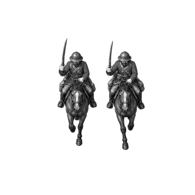
sprites/cavalry/cp/s-spent-4x.png 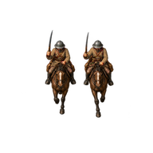
sprites/cavalry/ec/s-normal-2x.png 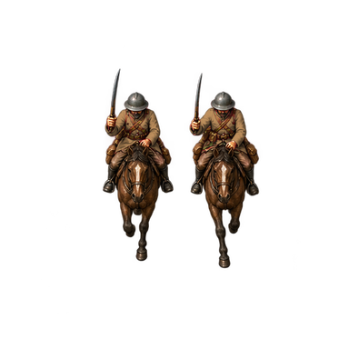
sprites/cavalry/ec/s-normal-4x.png 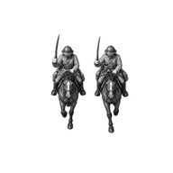
sprites/cavalry/ec/s-spent-2x.png 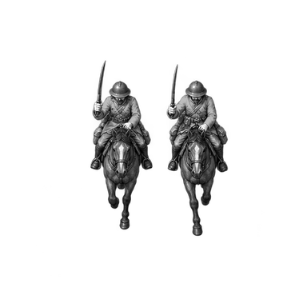
sprites/cavalry/ec/s-spent-4x.png 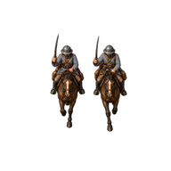
sprites/cavalry/neutral/s-normal-2x.png sprites/cavalry/neutral/s-normal-4x.png 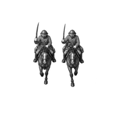
sprites/cavalry/neutral/s-spent-2x.png 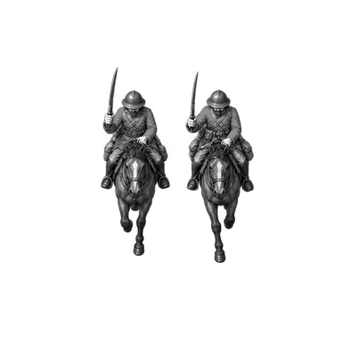
sprites/cavalry/neutral/s-spent-4x.png planes/cavalry/se-base-2x.png planes/cavalry/se-mask-2x.png planes/cavalry/se-base-4x.png planes/cavalry/se-mask-4x.png sprites/cavalry/cp/se-normal-2x.png sprites/cavalry/cp/se-normal-4x.png sprites/cavalry/cp/se-spent-2x.png sprites/cavalry/cp/se-spent-4x.png sprites/cavalry/ec/se-normal-2x.png sprites/cavalry/ec/se-normal-4x.png sprites/cavalry/ec/se-spent-2x.png sprites/cavalry/ec/se-spent-4x.png sprites/cavalry/neutral/se-normal-2x.png sprites/cavalry/neutral/se-normal-4x.png sprites/cavalry/neutral/se-spent-2x.png sprites/cavalry/neutral/se-spent-4x.png planes/cavalry/ne-base-2x.png planes/cavalry/ne-mask-2x.png planes/cavalry/ne-base-4x.png planes/cavalry/ne-mask-4x.png sprites/cavalry/cp/ne-normal-2x.png sprites/cavalry/cp/ne-normal-4x.png sprites/cavalry/cp/ne-spent-2x.png sprites/cavalry/cp/ne-spent-4x.png sprites/cavalry/ec/ne-normal-2x.png sprites/cavalry/ec/ne-normal-4x.png sprites/cavalry/ec/ne-spent-2x.png sprites/cavalry/ec/ne-spent-4x.png sprites/cavalry/neutral/ne-normal-2x.png sprites/cavalry/neutral/ne-normal-4x.png sprites/cavalry/neutral/ne-spent-2x.png sprites/cavalry/neutral/ne-spent-4x.png sheets/cavalry-white-2x.png sheets/cavalry-white-4x.png sheets/cavalry-checker-2x.png sheets/cavalry-checker-4x.png scenes/grass-normal-p0-2x.png scenes/grass-normal-p0-4x.png scenes/grass-normal-p1-2x.png scenes/grass-normal-p1-4x.png scenes/grass-spent-p0-2x.png scenes/grass-spent-p0-4x.png scenes/grass-spent-p1-2x.png scenes/grass-spent-p1-4x.png scenes/grass_w-normal-p0-2x.png scenes/grass_w-normal-p0-4x.png scenes/grass_w-normal-p1-2x.png scenes/grass_w-normal-p1-4x.png scenes/grass_w-spent-p0-2x.png scenes/grass_w-spent-p0-4x.png scenes/grass_w-spent-p1-2x.png scenes/grass_w-spent-p1-4x.png scenes/mud-normal-p0-2x.png scenes/mud-normal-p0-4x.png scenes/mud-normal-p1-2x.png scenes/mud-normal-p1-4x.png scenes/mud-spent-p0-2x.png scenes/mud-spent-p0-4x.png scenes/mud-spent-p1-2x.png scenes/mud-spent-p1-4x.png portrait export recipe and pins
Masters and exact prompts art/source/units/reference-v1/cavalry.png
art/source/portraits/reference-v1/cavalry-01.png
art/recipes/units/reference-v1/cavalry-atlas-01.json
art/recipes/portraits/reference-v1/cavalry-01.json